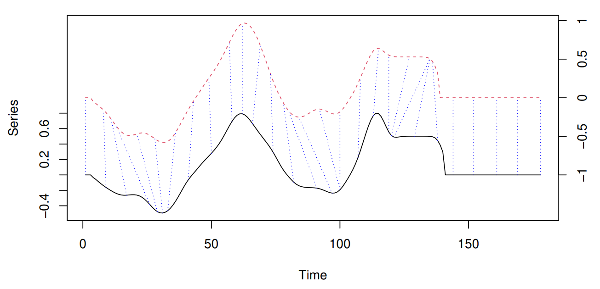

Clustering techniques for time series
Clustering time series
The good old clustering analysis techniques present some differences when applied to time series. Actually, there are many approaches for applying clustering techniques to time-series (look at [1] for a taxonomy). In this post, I will focus on clustering the whole-time series. Here, clustering means applying conventional clustering on discrete objects, where objects are time-series.
Time-series pose some challenging issues due to their large size and high dimensionality . In this context, the dimensionality of a series refers to time. In other words, the length of the series. There are several approaches for reducing time-series dimensionality (i.e. Discrete Fourier Transformation, Single Value Decomposition, Piecewise Linear Approximation).
One of the most simple techniques for reducing the dimensionality of a time series consists of extracting features. Under these feature-based approaches, you can use these features for running any traditional clustering methods. (Yess, similar to any other machine learning problem). The question is what features? and perhaps most important is to know how.
Alternatively, you can avoid any dimensional reduction and try some of the shape-based approaches. These kinds of approaches use the raw time series and usually employ conventional clustering methods, which are compatible with static data while their distance/similarity measure has been modified with an appropriate one for time series. Depending on the objective and length of the time series, the proper type of distance measures is determined. The L1 and L2 vector norms, also known as Manhattan and Euclidean distances respectively, are the most commonly used distance measures. They can be efficiently computed, but are only defined for series of equal length and are sensitive to noise, scale, and time shifts [2]. Thus, many other distance measures tailored to time series have been developed in order to overcome these limitations as well as other challenges associated with the structure of time series, such as multiple variables, serial correlation, etc.
One of the most common distance/similarity measures used with time series is DTW (Dynamic Time Warping). The easiest way to get an intuition of what DTW does is graphically. In the image below (stolen from the dtwclust package reference) you can see a sample alignment performed by the DTW algorithm between two series. The dashed blue lines exemplify how some points are mapped to each other, which shows how they can be warped in time.

For much more information about the clustering of time series I recommend the article Time-series clustering – A decade review [1]. There you will find a good taxonomy of the different approaches for time-series clustering as well as a detail of the different aspects to consider when applying clustering methods to time-series.
So now.. let’s write some code!
Some of the tools available for R
For R, there are plenty of packages for dealing with time series. Recently, the tidyverts [3] set of packages have raised my attention. Similarly to the well-known tidyverse, the tidyverts attempt to provide tidy tools for time series. The tidyverts include the tsibble package for temporal data frames manipulation, the fable package for forecasting, and the feasts package for feature extraction (among others). In addition, the book Forecasting Principle and Practices: Measuring strength of trend and seasonality [4] makes use of all the tools of the tidyverts (notice that one of the authors of the book, Prof. Rob J Hyndman, is one of the principals responsible for the tidyverts ).
A simple example
Let’s try some of the discussed approaches on a simple dataset containing meteorological information. The dataset contains information from 11 weather stations for two years (2018 and 2019). A total of eight meteorological variables are available. I won’t provide a detailed explanation of the variables because is out of the scope of the post. You can get the dataset from here.
library(dplyr)
library(readr)
library(tsibble)
library(lubridate)
library(ggplot2)
library(purrr)
library(dtwclust)
library(RColorBrewer)sta_data<-
readr::read_csv(
"https://github.com/harpomaxx/ts-clustering-example/raw/main/data/stations_data.csv.gz",
col_types = cols(
station = col_character(),
datetime = col_datetime(format = ""),
air_temp = col_double(),
drew_point = col_double(),
solar_rad_wm2 = col_double(),
humidity = col_double(),
wind_speed_kmh = col_double(),
wind_direction_deg = col_integer(),
ET0_mm = col_double(),
pp_mm = col_double()
))First, let’s take a look at the missing values inside the dataset. For this, we will plot a sort of heatmap with values averaged per week of the year for both years (2018 and 2019). we need to do some transformations for plotting data using the ggplot2 package. The process is pretty simple:
Round down the
datetimevariable toweekunit.Group by week and calculate the average for each numeric variable
transform
datetimetoyearweekunit from the tsibble packageReshape the dataset for use in
ggplot2
sta_weekly <-
sta_data %>% group_by(station) %>%
mutate(datetime = lubridate::floor_date(datetime, "week")) %>%
ungroup()
sta_weekly <-
sta_weekly %>% group_by(station, datetime) %>%
summarise_if(is.numeric, mean, na.rm = TRUE)
sta_weekly_melted<-sta_weekly %>%
mutate(datetime = tsibble::yearweek(datetime)) %>%
tidyr::pivot_longer(3:ncol(sta_weekly), names_to = "variable")
sta_weekly_melted## # A tibble: 8,536 × 4
## # Groups: station [11]
## station datetime variable value
## <chr> <week> <chr> <dbl>
## 1 1 2017 W52 air_temp 26.6
## 2 1 2017 W52 drew_point 8.51
## 3 1 2017 W52 solar_rad_wm2 328.
## 4 1 2017 W52 humidity 35.0
## 5 1 2017 W52 wind_speed_kmh 4.09
## 6 1 2017 W52 wind_direction_deg 183.
## 7 1 2017 W52 ET0_mm 6.64
## 8 1 2017 W52 pp_mm NaN
## 9 1 2018 W01 air_temp 26.4
## 10 1 2018 W01 drew_point 15.5
## # … with 8,526 more rowsplot <-sta_weekly_melted %>%
filter(year(datetime) %in% c("2018","2019")) %>%
ggplot() +
facet_grid(variable ~ station, scales = 'free_y') +
geom_tile(aes(
x = year(datetime) %>% as.factor(),
y = week(datetime),
fill = value,
alpha = 0.5
)) +
theme_bw()+
xlab("Year") + ylab("Week of the year") +
theme(axis.text.x = element_text(
angle = 45,
vjust = 0.5,
hjust = 1
)) +
scale_fill_gradient(low = "yellow", high = "red") +
theme(
axis.title.x = element_blank(),
legend.position = 'none')
plot
Feature-based clustering
Now, let’s go with the first approach, we will extract some basic time-series features using the tsfeatures package. But first, just for reducing the computation, we will group and replace all the observations from the same day with the average of that given day. Then we will convert to the tstibble format from the tidyverts for being able to use the tsfeatures package.
sta_data_filtered <-
sta_data %>%
mutate(datetime = lubridate::floor_date(datetime, unit = "1 day")) %>%
group_by(station, datetime) %>%
summarise(across(where(is.numeric), ~ mean(.x, na.rm = TRUE, ))) %>%
ungroup()
sta_data_filtered <- sta_data_filtered %>%
mutate(datetime = as.Date(datetime)) %>%
as_tsibble(index = datetime,
key = station,
regular = TRUE)Now, let’s calculate the stability and lumpiness for a particular variable: air_temp. These two time-series features are based on tiled (non-overlapping) windows. Means or variances are produced for all tiled windows. Then, stability is the variance of the means, while lumpiness is the variance of the variances (check the tsfeatures package for more info).
library(feasts)
library(tsfeatures)
air_temp_stability <- sta_data_filtered %>%
features(air_temp,stability) %>%
select(station,stability)
air_temp_lumpiness <- sta_data_filtered %>%
features(air_temp,lumpiness ) %>%
pull(lumpiness)
cbind(air_temp_stability,
air_temp_lumpiness ) %>%
as_tibble()## # A tibble: 11 × 3
## station stability air_temp_lumpiness
## <chr> <dbl> <dbl>
## 1 1 0.892 0.0107
## 2 10 0.703 0.106
## 3 11 0.859 0.0145
## 4 2 0.767 0.0328
## 5 3 0.793 0.0445
## 6 4 0.674 0.0385
## 7 5 0.787 0.0675
## 8 6 0.701 0.136
## 9 7 0.779 0.0343
## 10 8 0.769 0.0360
## 11 9 0.873 0.0110The function features() creates scalar valued summary features for a dataset from feature functions. The function requires two parameters, the time-series and functions (or lambda expressions) for the features to compute. Here, we have used the functions stability() and lumpiness() from the tsfeature package.
Now, let’s calculate some other features. The function acf_features() computes the autocorrelation function of the series, the differenced series, and the twice-differenced series. acf_features() produces a vector comprising the first autocorrelation coefficient in each case, and the sum of squares of the first 10 autocorrelation coefficients in each case. On the other hand the function stl_features computes various measures of trend and seasonality of a time series based on an STL decomposition. STL is a versatile and robust method for decomposing time series. STL is an acronym for “Seasonal and Trend decomposition using Loess”.
air_temp_acf <- sta_data_filtered %>%
features(air_temp,acf_features ) %>% select(x_acf1,x_acf10)
air_temp_stl <- sta_data_filtered %>%
features(air_temp,stl_features ) %>% select(trend,spike, linearity, curvature)
air_temp_tsfeatures <- cbind(
air_temp_stability,
lumpiness = air_temp_lumpiness,
air_temp_stl,
air_temp_acf
) %>% as_tibble()
air_temp_tsfeatures## # A tibble: 11 × 9
## station stability lumpiness trend spike linearity curvature x_acf1 x_acf10
## <chr> <dbl> <dbl> <dbl> <dbl> <dbl> <dbl> <dbl> <dbl>
## 1 1 0.892 0.0107 0.845 0.000377 -1.25 46.8 0.940 6.91
## 2 10 0.703 0.106 0.620 0.000407 1.37 21.7 0.858 3.70
## 3 11 0.859 0.0145 0.803 0.000344 -0.849 47.7 0.927 6.19
## 4 2 0.767 0.0328 0.768 0.000691 -19.1 49.4 0.902 5.44
## 5 3 0.793 0.0445 0.728 0.000198 4.53 20.5 0.896 5.15
## 6 4 0.674 0.0385 0.606 0.00108 -25.3 13.8 0.818 3.31
## 7 5 0.787 0.0675 0.719 0.000349 -1.39 23.1 0.904 5.00
## 8 6 0.701 0.136 0.660 0.00210 -21.8 13.1 0.850 3.99
## 9 7 0.779 0.0343 0.726 0.000638 16.1 44.2 0.895 5.07
## 10 8 0.769 0.0360 0.725 0.000762 -5.50 39.4 0.875 5.07
## 11 9 0.873 0.0110 0.833 0.000379 -5.00 46.9 0.935 6.68So now, we can finally apply a clustering method. Why don’t try the good old k-means.
kmeans_results<-kmeans(air_temp_tsfeatures,centers =5,
nstart = 1,
iter.max = 10)
cbind(air_temp_tsfeatures,cluster=kmeans_results$cluster) %>%
select(station,cluster)## station cluster
## 1 1 4
## 2 10 1
## 3 11 4
## 4 2 2
## 5 3 1
## 6 4 3
## 7 5 1
## 8 6 5
## 9 7 4
## 10 8 4
## 11 9 4Shape-based clustering
For the shape-based approach, we will use the dtwclust package. Similarly to the previous feature-based approach, we will group and average by day.
## Group by day and average
sta_data <- sta_data %>%
mutate(datetime = lubridate::floor_date(datetime,
unit = "1 day")) %>%
group_by(station, datetime) %>%
summarise(avg_hour=mean(air_temp,na.rm=TRUE)
) %>% ungroup() The dtwclust package is not part of the tidyverts so we will need to convert the tsibble data to a R list before invoking the dtwclust() function. First, we will convert all the nan values present in the time-series to NA. This is required by the tidyr fill() function. The fill() function is used to replace missing values with previous and next values. Then, we convert to matrix, there are probably faster and better ways to do this, but… who cares.. this do the work!
## replace nan by NA
sta_data <-
sta_data %>% mutate_if(is.numeric, ~ ifelse(is.nan(.), NA, .))
# transfor dataframe to matrix
sta_series <- sta_data %>%
as_tibble() %>% select(station, datetime, avg_hour) %>%
group_by(station) %>%
tidyr::fill(avg_hour, .direction = "downup") %>%
ungroup() %>%
group_split(station, .keep = FALSE) %>%
map( ~ .x %>%
pull(avg_hour))
## print the first then observation from station 1
sta_series[[1]][1:10]## [1] 24.53708 25.74463 28.05531 29.30167 26.41094 25.37417 26.09240 25.95158
## [9] 26.63589 29.43906OK, now, we can finally use the tsclust() from dtwclust package. The function allows you to define several aspects of clustering methods. the first is the type of clustering algorithm you want to use. Here you can choose between Hierarchical and partitional clustering (check the reference for more options). We re going to choose partitional, In this case, the data is explicitly assigned to one and only one cluster out of k total clusters. The latter is the same one we used for the feature-based approach. Then, it is distance, here we can use several distances such dtw, dtw_basic among several DTW variants (again… check the package reference for more info). dwt_basic is the default, and is a custom version of DTW with less functionality, but faster (according to the dwtclust package author). Finally, it is the prototypes, which stands for time-series averaging, which is another word for referring to centroids. So basically, here we can choose the method for centroids selection. In this case, we are going to use the pam method. This basically means that the cluster centroids are always one of the time series in the data. In this case, the distance matrix can be pre-computed once using all-time series in the data and then re-used at each iteration. It usually saves overhead overall for a small dataset.
## reinterpolate (only necesary for for L1)
#sta_series <-
# reinterpolate(sta_matrix, new.length = max(lengths(sta_matrix)))
## Clustering
univariate_clusters <- tsclust(
sta_series,
k = 4,
type = "partitional",
distance = "dtw_basic",
centroid = "pam", # fast method
seed = 3247,
trace = TRUE,
control = partitional_control(nrep = 1L)
)##
## Precomputing distance matrix...
##
## Iteration 1: Changes / Distsum = 11 / 9030.598
## Iteration 2: Changes / Distsum = 3 / 8020.471
## Iteration 3: Changes / Distsum = 0 / 8020.471
##
## Elapsed time is 0.371 seconds.By default the tsclust object prints information about the 4 selected centroids.
univariate_clusters## partitional clustering with 4 clusters
## Using dtw_basic distance
## Using pam centroids
##
## Time required for analysis:
## user system elapsed
## 0.947 0.016 0.371
##
## Cluster sizes with average intra-cluster distance:
##
## size av_dist
## 1 2 421.7952
## 2 3 739.0566
## 3 2 720.0553
## 4 4 879.9001Now, let’s print the membership table.
## gather the information about stations and set list names
sta_lst_labels<-sta_data %>% as_tibble() %>%
select(station) %>% unique() %>%
unname() %>% unlist()
names(sta_series)<-sta_lst_labels
## print the table with clustering information
cbind(cluster=univariate_clusters@cluster,
station=names(sta_series)) %>%
as.data.frame() %>%
arrange(station)## cluster station
## 1 2 1
## 2 1 10
## 3 2 11
## 4 4 2
## 5 3 3
## 6 3 4
## 7 1 5
## 8 4 6
## 9 4 7
## 10 4 8
## 11 2 9Finally, since the tsclust object contains distance information, we can use it for generating a heatmap including the hierarchical information.
heatmap(univariate_clusters@distmat,main = "Similarities between stations",
col = colorRampPalette(brewer.pal(9, "Blues"))(16),
cexRow = 1,cexCol = 1,
symm = TRUE)
Just a few more words…
Additionally, a single time series may be constituted by several values that change on the same time scale, in which case they are named multivariate time series. In this post, I’ve just focused on two univariate approaches. By using the package tsclust it is not difficult to adapt the code from this post to work with multivariate time series.
Time-series clustering is a huge research topic, there are several approaches with multiple variations. The work of Aghabozorgi et al., 2015 [1] provides a good starting point to understand the differences between all the possible approaches for clustering with time-series
References
[1] Time-series clustering – A decade review. (Aghabozorgi et al., 2015)
[2] Comparing Time-Series Clustering Algorithms in R Using the dtwclust Package
[3] Tidy tools for Time Series. A set of R packages for working with time series.
[4] Forecasting: Principles and Practice (3rd Ed.). An excellent book for working with time series forecasting. Several tools from the tidyverts are discussed in the book
[5] Repository with the code and data.